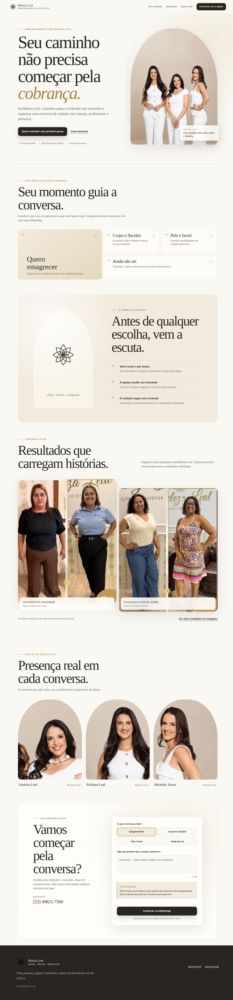
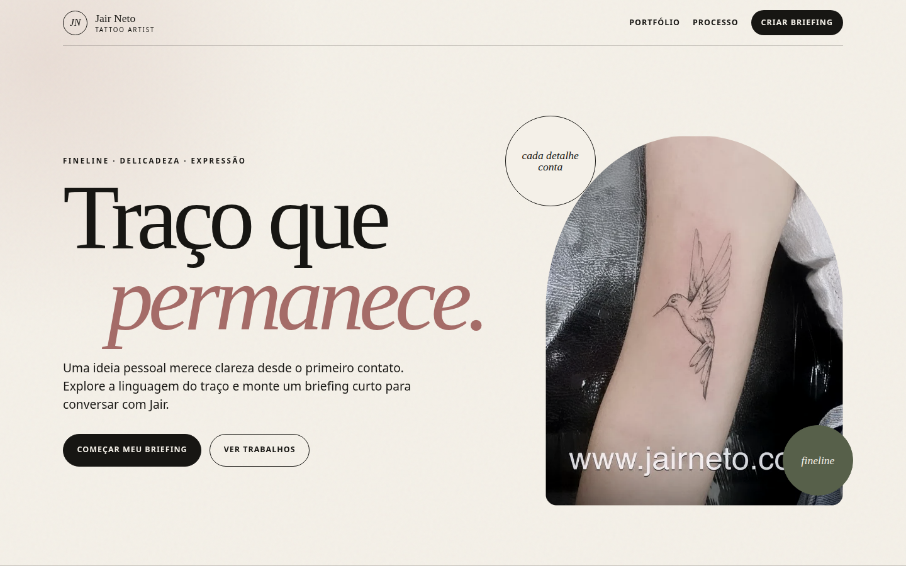
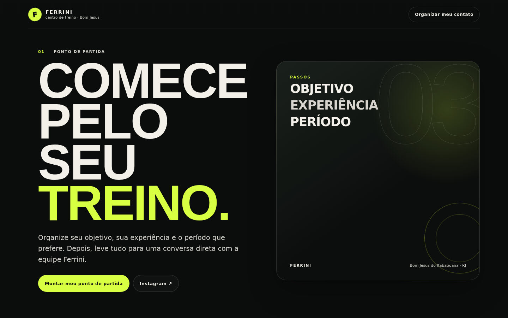
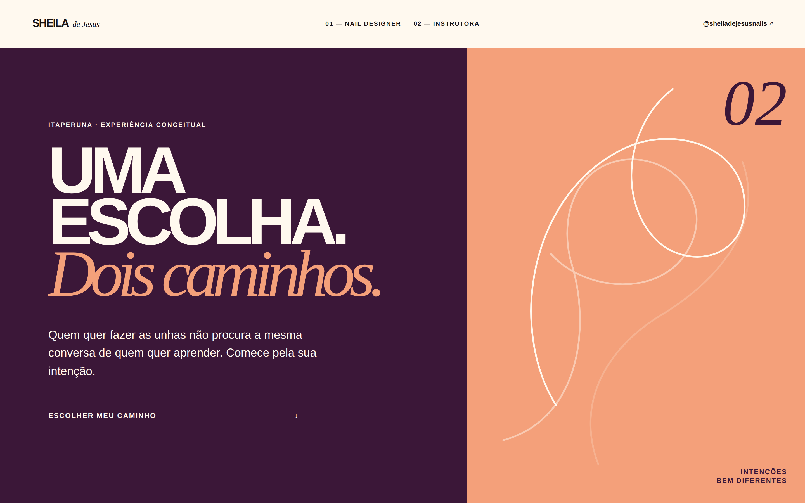

SITE PRINCIPAL · EMAGRECIMENTO + ESTÉTICA
Beleza Leal
Experiência completa para apresentar cuidado, método, resultados e conduzir a uma conversa clara com a equipe.
Abrir site ↗Software sob medida · Bom Jesus e região
A Domo transforma rotinas confusas em sistemas, sites e automações que sua equipe e seus clientes conseguem usar de verdade.
Nenhum número inventado. A interface acima ilustra uma possibilidade; o fluxo real nasce do diagnóstico do negócio.
Comece pelo gargalo
Veja uma direção possível para cada problema. São exemplos conceituais, não produtos de prateleira nem promessa de resultado.
Um caminho guiado pode reunir serviço, preferência de horário e dados essenciais antes da conversa continuar.
Trabalhos e demonstrações públicas
Sites e demonstrações tornam a conversa concreta. Materiais marcados como demo são conceitos não oficiais e não significam contratação, parceria ou aprovação do negócio citado.

Experiência completa para apresentar cuidado, método, resultados e conduzir a uma conversa clara com a equipe.
Abrir site ↗
Presença autoral, portfólio visual e briefing conectado ao atendimento.
Abrir demonstração ↗
Jornada direta para transformar interesse em aula experimental.
Abrir demonstração ↗
Experiência elegante para apresentar trabalho e encurtar o caminho até o contato.
Abrir demonstração ↗
Fluxo visual para organizar categoria, material, medidas e quantidade antes do orçamento.
Abrir demonstração ↗
Apresentação de turmas, horários e contato orientado à aula.
Abrir demonstração ↗
Jornada guiada por perfil, modalidade e objetivo.
Abrir demonstração ↗Projeto sem salto no escuro
O projeto começa no processo real. A tecnologia entra depois que o problema, a próxima ação e o ganho operacional estão claros.
Trazer um gargalo para a conversa ↗O que entra, onde trava, quem decide e o que se perde pelo caminho.
Uma demonstração concreta reduz ruído antes do investimento maior.
Escopo e prioridades seguem o que precisa funcionar primeiro.
Uma solução utilizável, responsiva e explicável para quem vai operá-la.
Tecnologia com critério
Visual forte precisa conduzir uma ação, explicar uma escolha ou reduzir esforço.
Começar pelo essencial sem criar um beco sem saída para o próximo estágio.
Quem usa precisa entender estado, responsabilidade e próxima ação.
Demonstrações são identificadas como conceituais. Resultados não são inventados.
Proximidade sem limite de ambição
Você explica o negócio para quem entende o projeto. A conversa acontece em linguagem clara, com escopo e próximos passos visíveis.
O primeiro passo é uma conversa concreta
Não precisa chegar com a solução pronta. Explique o fluxo, o gargalo e o que deveria acontecer melhor.
Conversar com a Domo ↗Sem formulário genérico · contato direto pelo WhatsApp